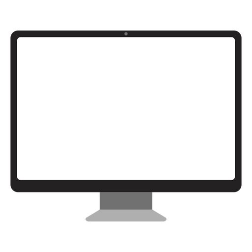
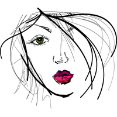

My journey thus far in college has been a lot of second guessing and confusion.
Throughout my teenage life, I’ve been very interested in technology. I was the kid who looked up new tips and tricks to be ahead of the game when people needed help. I was the kid who knew how to reset the Wi-Fi router. I was the kid who watched my mom work hours on end on our home computer designing logos. So that’s where my interests came from.
Now onto choosing my major. I.T., Comp Sci, Information Systems. That’s the range I applied to different universities for. Bachelor of Science, Computer and Information Science at THE Ohio State University. Sounds perfect, right? At first, yes. After both calculus classes, multiple coding classes, and physics? Not so much.
There’s a better ring to that.
Art. It runs in the family. My grandmother was an illustrator and a painter. Her work was beautiful. My mother designed logos, Christmas cards and business cards. Her work was unique. My sister just graduated with a minor in graphic design. Onto a big girl job in Boston. Ever since I was little, it was a favorite hobby of mine. My work was never above average in my eyes, but my friends and family told me otherwise.
I switched my degree to a BA. It didn’t seem right at first, as science is in the name of my major. But looking more into it, I think designing websites and apps could be my future. I became passionate to make my future courses and electives revolve around it. My first digital art class was ART 3000 – Digital Imaging. It was a simple Photoshop and Illustrator based course, but it was my first class here that I really enjoyed participating in.
Now brings me to my fourth semester at Ohio State. After the first two weeks, I can definitely say I’m most excited for this class. To see that my coding skills will be able to compliment my interest in art is great. I was a bit intimidated seeing how talented everyone in this class is, but I was reassured to see other Comp Sci majors. I can’t wait to learn more digital art techniques and improve on my skills.
Watch it happen weekly through my blogs...